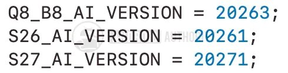

新闻 · 2026-11-28 12:00
Galaxy S27 系列手机专享，三星 One UI 9.5 Beta 曝光 36 项 AI 新功能
三星 One UI 9.5 Beta 测试版代码显示，Galaxy S27 系列将独享 36 项 AI 新功能，包括照片重构、短视频生成、AI 通话安全检测等。S26 Ultra 因版本号“20263”暂不支持，但未来或可下放。部分功能如 Gen Video 积分与 Bixby 卡片需 Galaxy AI Premium 订阅。

来源与核验
单一信源报道，未交叉核实